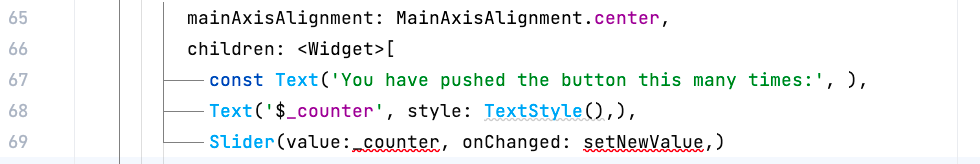
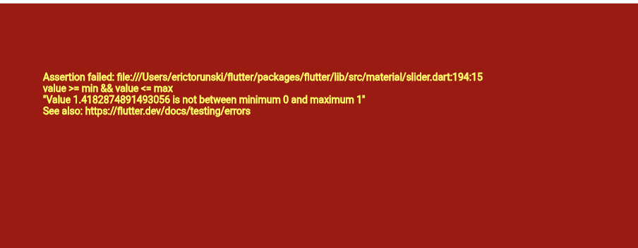
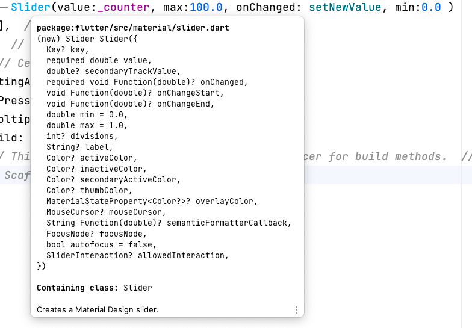
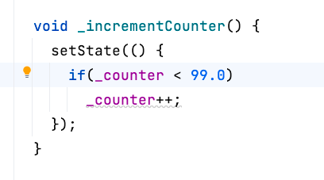

Let's look at the default code that was provided by Android Studio. Let's try adding a Slider after the two Text() widgets :

If you right-click on the Slider constructor and go to the declaration, we see that Slider has several required parameters. The required keyword means that the parameter can be in any order, but there is no default value. The user is required to give a value for that parameter.Let's practice writing a function above the other _incrementCounter function:
void setNewValue(double value)
{
_counter = value;
}
You will get a error that int can't be set to double, so go and change the declaration of _counter from int to double:
double _counter = 0;
Then set the onChanged: parameter to the name of the function setNewValue. If you try running this, changing the slider won't change the text the way the button would do. This brings us to one of the main new concepts of Mobile Graphical Programming.
In modern user interface programming, the screen will only redraw when a variable has changed. If none of the variables have changed, then there is no need to redraw the screen.
In order to indicate that we are changing a variable and we want the screen to update, we use the setState() function.
void setNewValue(double value)
{
setState(() {
_counter = value;
});
}
Here, we are updating the _counter variable to a new value. By doing this, Flutter will optimize the redraw so that it only updates widgets that actually use the _counter variable. Any widget that uses numClicks will get updated.
If you try to click the + button, you will get a crash:

If you read the message, it says that value is not between minimum 0 and maximum 1. Of course, because the _incrementCounter function has: _counter++.Let's set the minimum and maximum values of the slider to be 0 and 100:
Slider(value:_counter, max:100.0, onChanged: setNewValue, min:0.0 )
Remember, the parameters can be in any order as long as you put the name in front of the value. If you want to see what parameters are in the function, just hover your mouse over the function name:

Remember, the code is hot-swapping so we don't need to recompile. Now try using the slider, and clicking the + button. When you click the + button, you should see the slider move. That's because the _incrementCounter function uses setState() to modify the variable _counter. Any widget that uses _counter will be redrawn.
You can declare variables to hold values. To modify these variables, you can use Widgets that let the user click or drag to update these values. The Widgets normally have a parameter that specifies which function to call when the user clicks or changes the widget. This function can update the variables however it must be done within setState() if you want the Widgets to react with the new updated values.